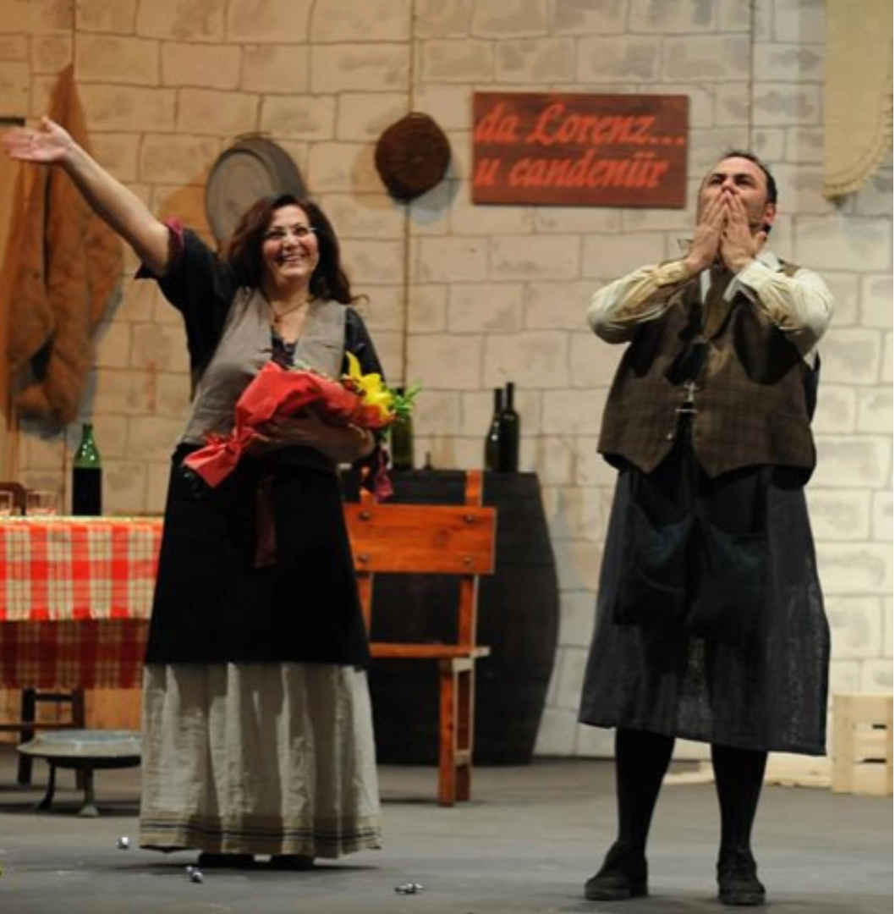
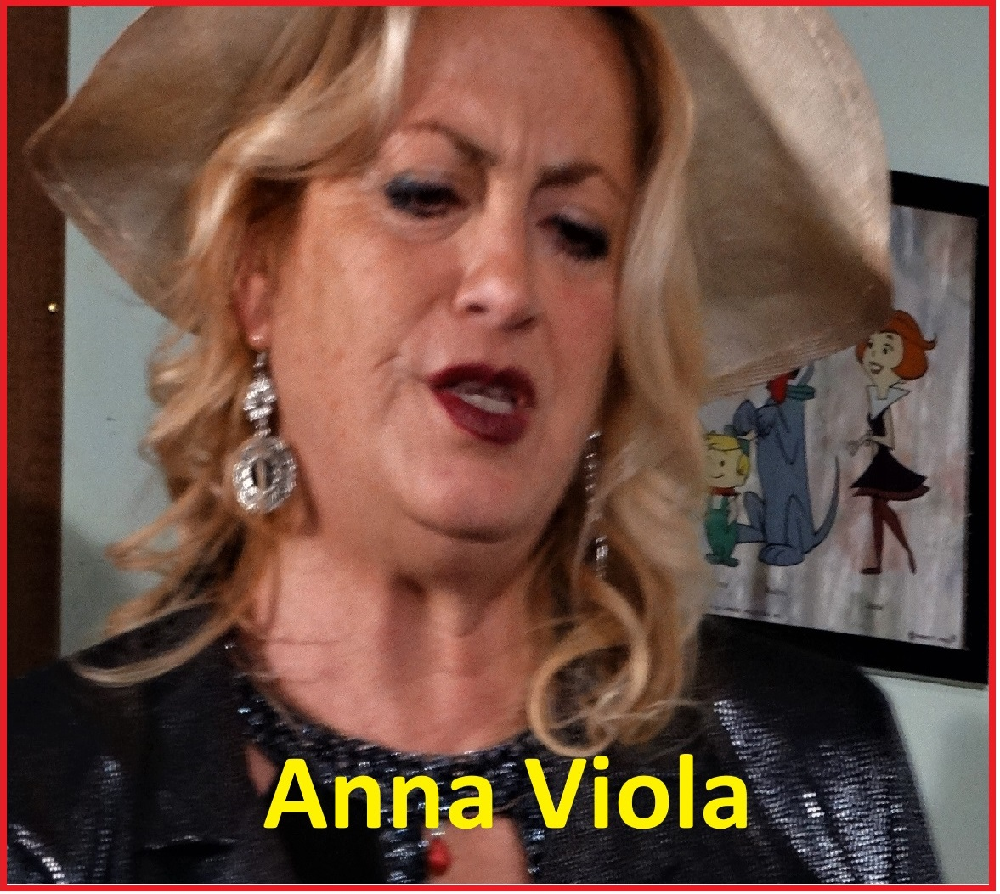
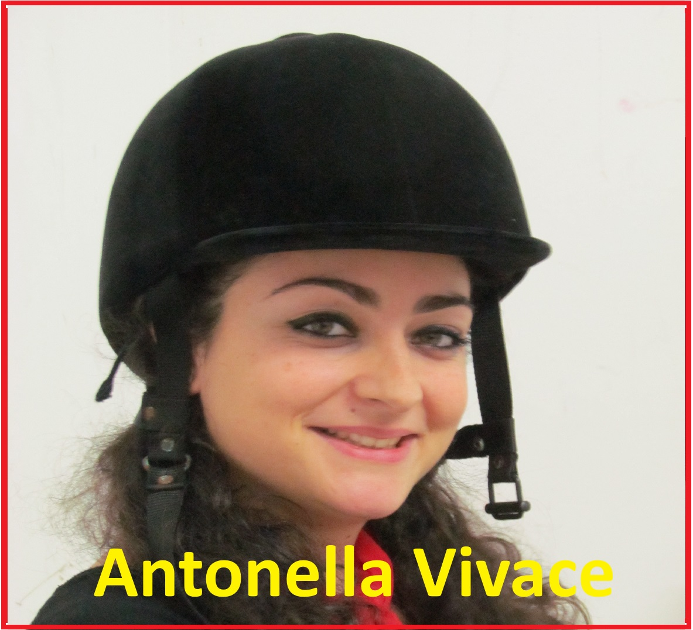
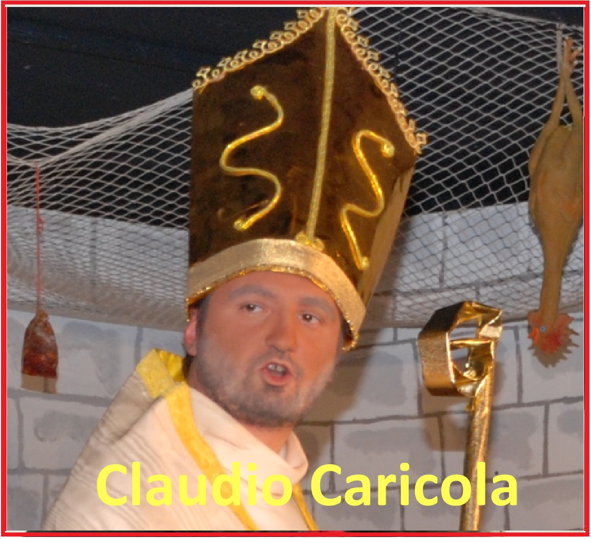
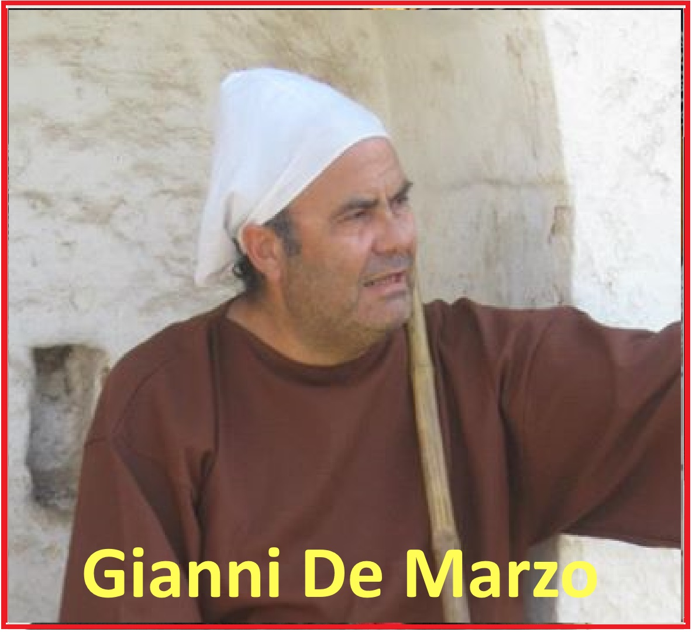
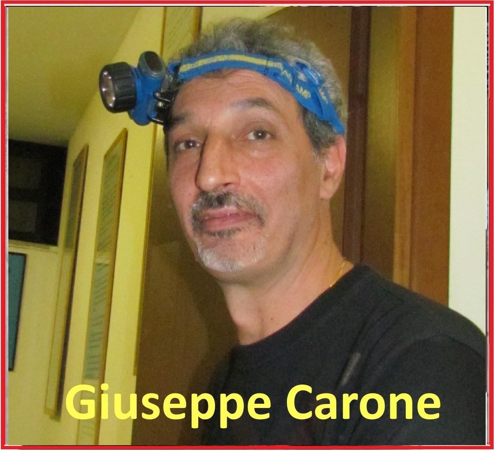
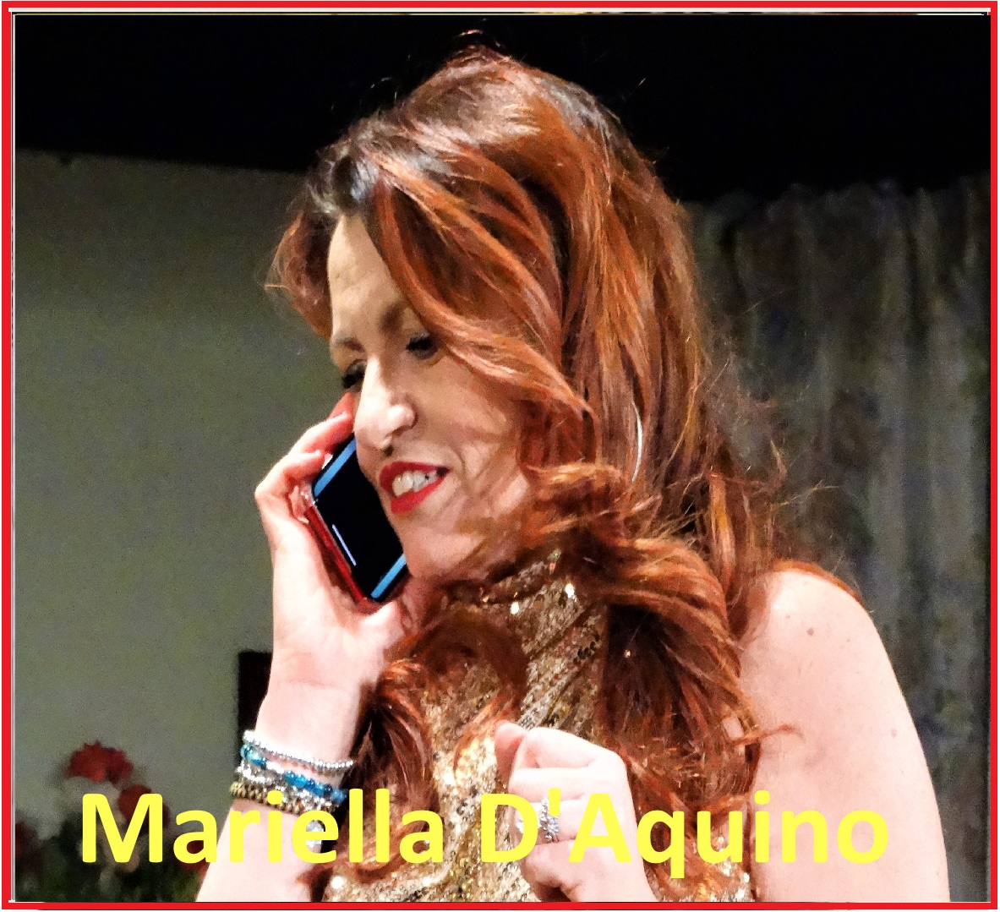
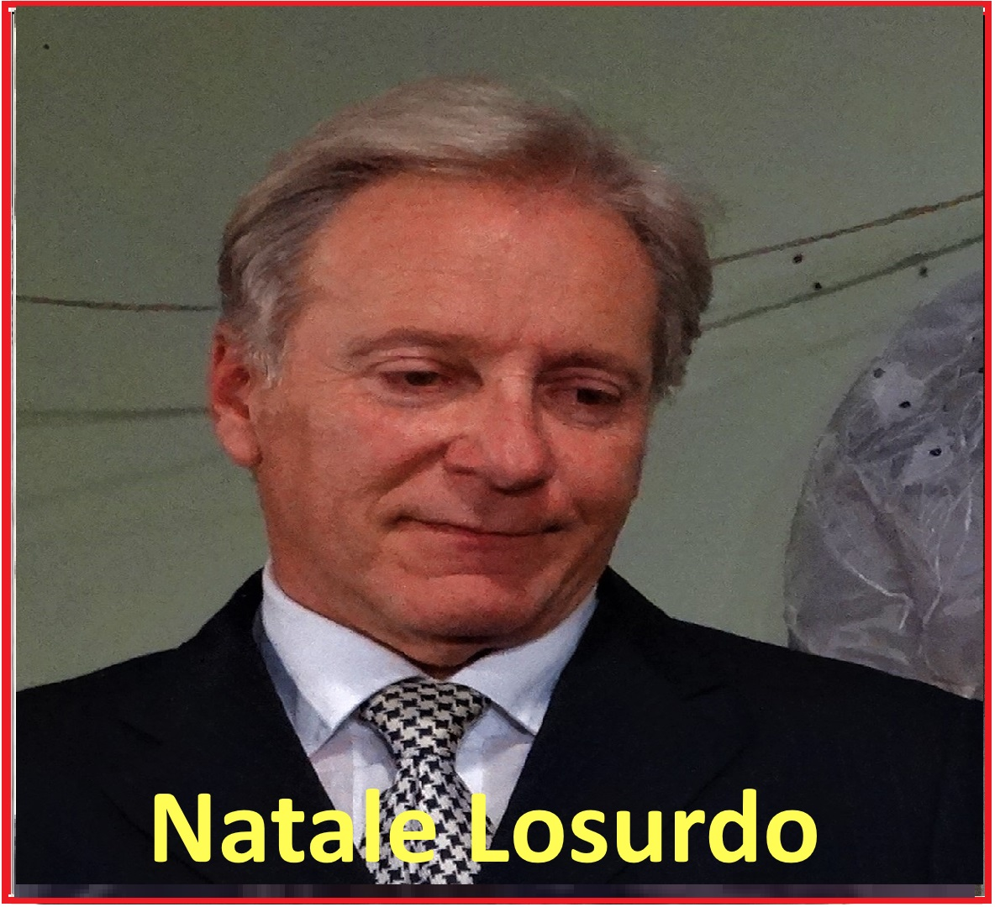
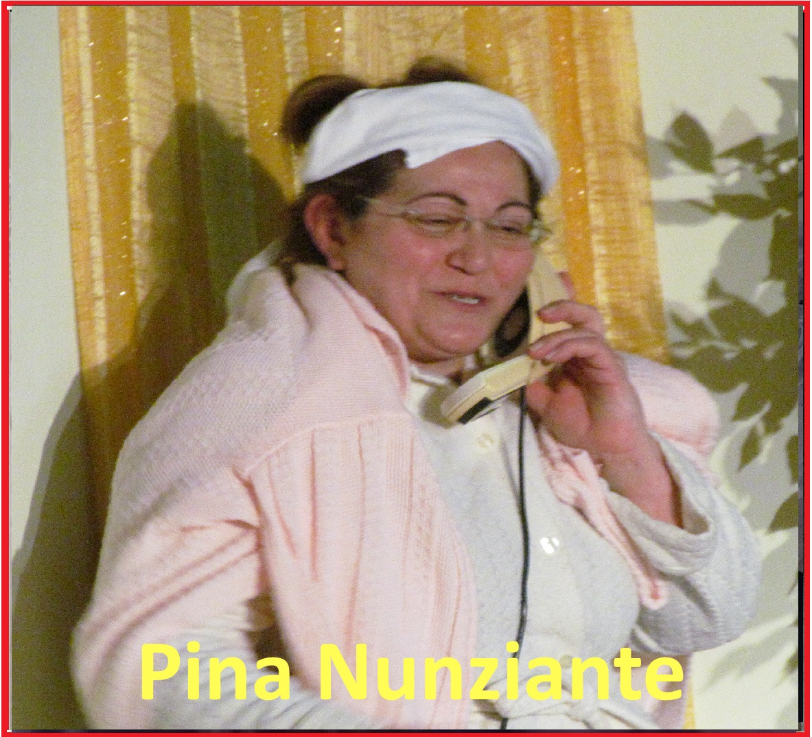

La nostra storia
La compagnia

Chi siamo
Una compagnia nata dalla passione per il teatro.

Origini del gruppo Quelli del Teatro
Il gruppo, gestito da Gianni De Marzo , nasce nel 2005 nella Parrocchia di San Sabino, grazie alla disponibilità del Parroco di allora, don Angelo CASSANO , interessato a fare teatro.La prima sfida, “L’ultimo traino” fu un grande successo; da qui ci fù la crescita e la mutazione del gruppo con altre commedie come "Le peducchie arrecchessciute" , "U cick e ciack in internet" , "Felici matrimoni" e "da Lorenz u’ candiniire" replicata tantissime volte e in tante realtà come teatri, piazze, locali parrocchiali, sino ad approdare al teatro storico della città di Bari "NICCOLO' PICCINNI" percorrendo il teatro "PURGATORIO" .
Autore dei testi che il gruppo mette in scena è Gianni De Marzo . La caratteristica delle sue commedie è avere tematiche inerenti a “spaccati” di vita quotidiana, messaggi da proiettare allo spettatore, privi di volgarità, giocherellando con gli equivoci.
La protagonista femminile del gruppo è Pina Nunziante ricca di energie e che con la sua caratterialità, riesce a coinvolgere gli attori in scena e gli spettatori. Oggi il gruppo teatrale filodrammatico. è composto da numerose persone che diverte… divertendosi
Il gruppo
I volti di Quelli del Teatro







